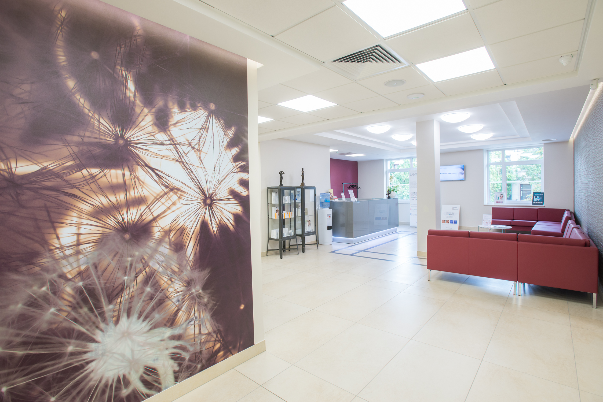
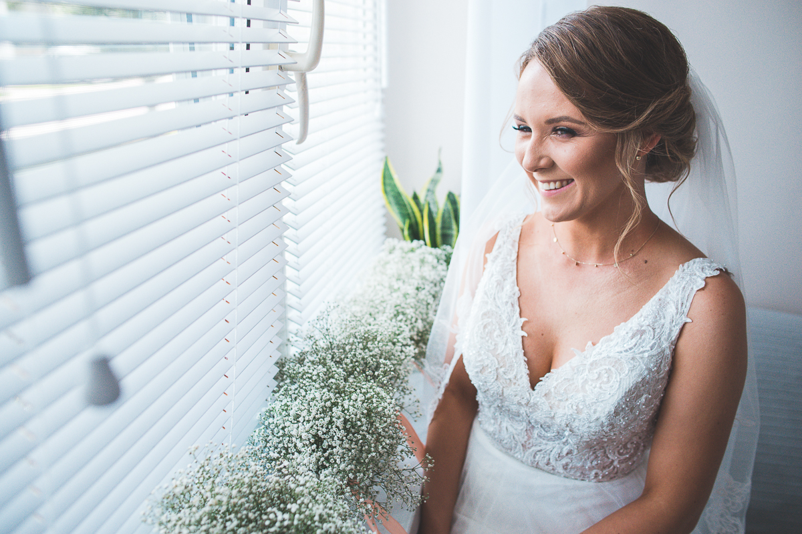
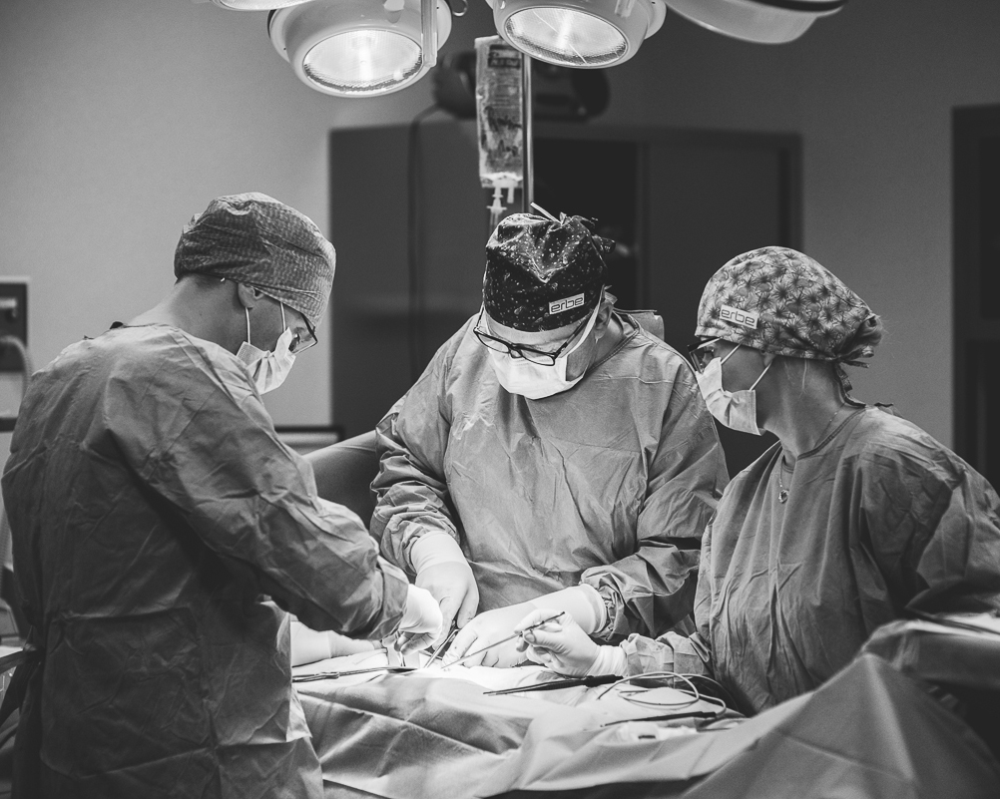
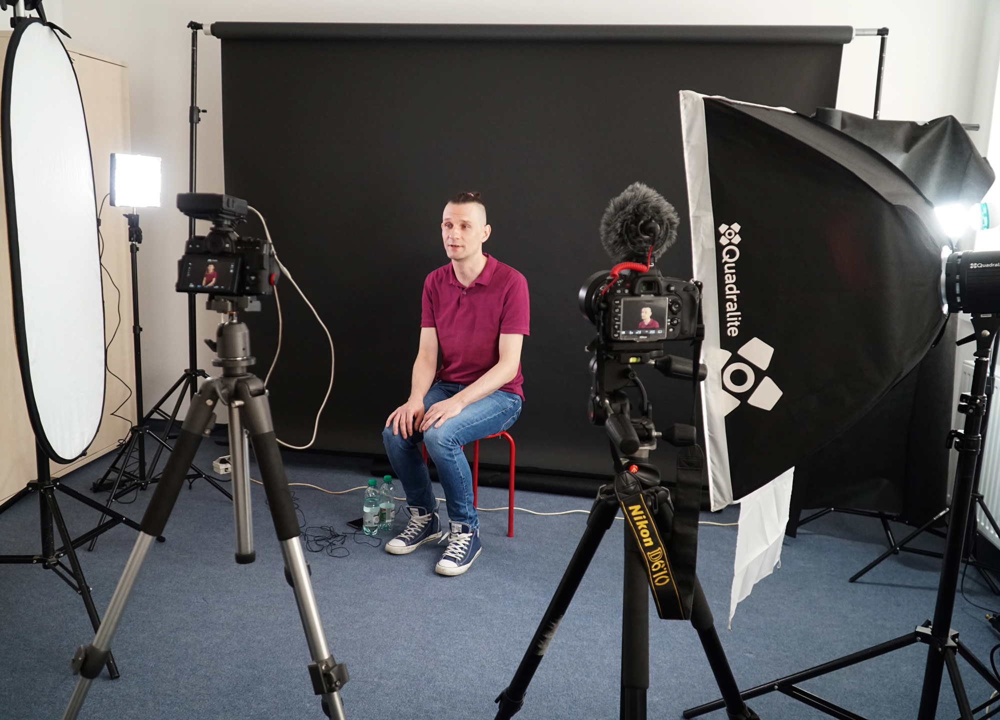
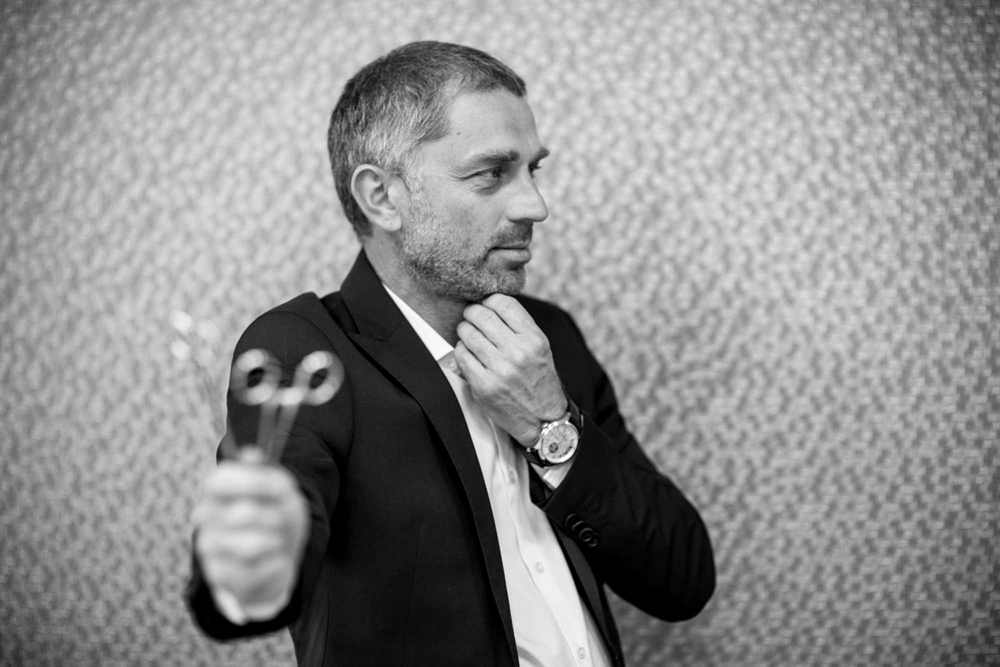
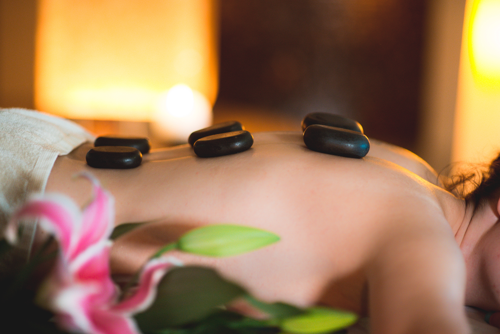

<article id="content">
    <section>

        <div id="carouselIndicators" class="carousel slide shadow" data-ride="carousel">
            <ol class="carousel-indicators">
                <li data-target="#carouselIndicators" data-slide-to="0" class="active"></li>
                <li data-target="#carouselIndicators" data-slide-to="1"></li>
                <li data-target="#carouselIndicators" data-slide-to="2"></li>
            </ol>
            <div class="carousel-inner shadow">
                <div class="carousel-item active">
                    
                    <div class="carousel-caption d-none d-md-block">
                        <h5>Fotografia medyczna</h5>
                        <a class="btn btn-secondary btn-lg shadow-lg" type="button"
                        onclick="toMedyczna()" href="#medyczna"
                            >Zobacz więcej <i
                                class="fa fa-angle-right"></i></a>
                    </div>
                </div>
                <div class="carousel-item">
                    
                    <div class="carousel-caption d-none d-md-block">
                        <h5>Fotografia biznesowa</h5>
                        <a type="button"
                        onclick="toBiznesowa()" href="#biznesowa"
                            class="btn btn-secondary btn-lg shadow-lg">Zobacz więcej <i
                                class="fa fa-angle-right"></i></a>
                    </div>
                </div>
                <div class="carousel-item">
                    
                    <div class="carousel-caption d-none d-md-block">
                        <h5>Film</h5>
                        <a type="button"
                        onclick="toFilm()" href="#film" class="btn btn-secondary btn-lg shadow-lg">Zobacz
                            więcej <i class="fa fa-angle-right"></i></a>
                    </div>
                </div>
            </div>
            <a class="carousel-control-prev" href="#carouselIndicators" role="button" data-slide="prev">
                <span class="carousel-control-prev-icon" aria-hidden="true"></span>
                <span class="sr-only">Previous</span>
            </a>
            <a class="carousel-control-next" href="#carouselIndicators" role="button" data-slide="next">
                <span class="carousel-control-next-icon" aria-hidden="true"></span>
                <span class="sr-only">Next</span>
            </a>
        </div>

        <section class="main-section">

            <div>
                <div class="bg-white p-0 shadow-lg">
                    <article id="scroll-oNas">
                    
                            <h1 class="h2 text-center mb-4">O nas</h1>
                            <p id="oNasText">Naszą przygodę z fotografią zaczęliśmy <b>8 lat temu</b>. Na początku skupiliśmy się na fotografowaniu
                                wnętrz, wykonywaniu portretów oraz sesji rodzinnych. Z czasem rozszerzyliśmy zakres działań o
                                tworzenie filmów. <br><br>Realizujemy wywiady, filmy instruktażowe oraz szkoleniowe. Od roku bardzo
                                skupiliśmy się na obsłudze firm medycznych, takich ja <b>Medyk Centrum</b> czy <b>Baxter Polska</b>. <br><br>Oferujemy
                                kompleksową opiekę fotograficzną i filmową. Dbamy o to, aby nasi klienci otrzymali pełne doradztwo
                                przed realizacją zlecenia, aby podczas zdjęć czuli się swobodnie, a po realizacji otrzymali produkt
                                dostosowany do swoich potrzeb.<br><br>
                                Cały czas się doskonalimy, aktualnie naszym celem jest stworzenie studia fotograficzno-filmowego.
                                Prace już postępują, więc niebawem będziemy mogli Państwa do niego zaprosić.<br><br>
                                Zlecenia realizuje <b>Piotr Łodziński</b>, który ukończył <b>Akademię Fotografii w Warszawie</b> i jest nie tylko
                                świetnym fotografem i filmowcem, ale również bardzo dobrym doradcą. Jeśli potrzebują Państwo
                                profesjonalnej i rzetelnej obsługi, zapraszamy do kontaktu.
                            </p>
                    
                    </article>
                    <article class="mb-5" id="scroll-naszeProjekty">
                        <h1 class="h2 text-center mt-5 mb-5">Nasze projekty</h1>
                        <div class="row col-12 p-0 m-0">
                            <div class="col-lg-4 col-md-6 mb-5">

                                <div class="card p-0 pl-2 pr-2">
                                    <div class="box">
                                        
                                        <button type="button"
                                        onclick="toMedyczna()" href="#medyczna"
                                            class="btn btn-secondary shadow-lg">Galeria <i
                                                class="fa fa-angle-right"></i>
                                        </button>
                                    </div>
                                    <div class="card-body p-0 pt-3">
                                        <h5 class="card-title"><a type="button"
                                            onclick="toMedyczna()" href="#medyczna">Fotografia
                                                medyczna</a></h5>
                                        <p class="card-text">Specjalizujemy się w wykonywaniu zdjęć szpitali i gabinetów, portretowych lekarzy oraz całej obsługi
                                            placówek medycznych.<br>Przeprowadzamy sesje zdjęciowe podczas zabiegów i operacji. Nasze
                                            wieloletnie doświadczenie sprawiło, że wiemy jak zachować się podczas takich ujęć i zadbać o
                                            odpowiednie bezpieczeństwo.</p>
                                        <button type="button"
                                        onclick="toMedyczna()" href="#medyczna"
                                            class="btn btn-secondary shadow-none">Zobacz więcej <i
                                                class="fa fa-angle-right"></i>
                                        </button>
                                    </div>

                                </div>
                            </div>
                            <div class="col-lg-4 col-md-6 mb-5 ">

                                <div class="card p-0 pl-2 pr-2">
                                    <div class="box">
                                        
                                        <button type="button"
                                            onclick="toBiznesowa()" href="#biznesowa"
                                            class="btn btn-secondary shadow-lg">Galeria <i
                                                class="fa fa-angle-right"></i>
                                        </button>
                                    </div>
                                    <div class="card-body p-0 pt-3">
                                        <h5 class="card-title"><a href="#biznesowa" type="button" onclick="toBiznesowa()">Fotografia
                                                biznesowa</a></h5>
                                        <p class="card-text">Strona internetowa, portale branżowe, Facebook, Instagram czy Allegro, wszędzie tam niezbędne są
                                            dobre zdjęcia. Profesjonalne zdjęcia biznesowe mogą pozytywnie zmienić wizerunek firmy i zwiększyć
                                            zainteresowanie klientów.
                                            <br>Portrety wizerunkowe Twojego zespołu, fotografie wnętrz oraz zdjęcia produktowe – tym się
                                            zajmujemy, ponieważ dobra prezentacja to szybsza sprzedaż. </p>
                                        <button href="#biznesowa" type="button" onclick="toBiznesowa()"
                                            class="btn btn-secondary shadow-none">Zobacz więcej <i
                                                class="fa fa-angle-right"></i>
                                        </button>
                                    </div>
                                </div>
                            </div>
                            <div class="col-lg-4 col-md-6 mb-5 offset-md-3 offset-lg-0 ">
                                <div class="card p-0 pl-2 pr-2">
                                    <div class="box">
                                        
                                        <button type="button"
                                        onclick="toFilm()" href="#film"
                                            class="btn btn-secondary shadow-lg">Galeria <i
                                                class="fa fa-angle-right"></i>
                                        </button>
                                    </div>
                                    <div class="card-body p-0 pt-3">
                                        <h5 class="card-title"><a type="button"
                                            onclick="toFilm()" href="#film">Film</a></h5>
                                        <p class="card-text">Obecnie to właśnie materiały wideo, takie jak filmy instruktażowe, szkoleniowe, wizerunkowe oraz
                                            wywiady zyskują na znaczeniu i popularności.<br>
                                            Filmy szkoleniowe i instruktażowe są zdecydowanie lepiej zrozumiałe i przyswajalne dla
                                            potencjalnych widzów niż treść zawarta w innych, bardziej tradycyjnych źródłach wiedzy.
                                            <br>Realizujemy również wywiady. Wiemy jak profesjonalnie ustawić oświetlenie, aby korzystnie
                                            zaprezentować osobę podczas realizacji oraz podkreślić charakter wywiadu.<br>
                                            Dźwięk w filmie jest równie ważny jak obraz, dlatego przykładamy dużą uwagę do jakości
                                            nagrywanego dźwięku. Podkłady dźwiękowe dobieramy tak, aby były uzupełnieniem zmontowanego
                                            materiału i tworzyły spójną całość.</p>
                                        <button type="button"
                                        onclick="toFilm()" href="#film"
                                            class="btn btn-secondary shadow-none">Zobacz więcej <i
                                                class="fa fa-angle-right"></i>
                                        </button>
                                    </div>
                                </div>
                            </div>
                        </div>
                    </article>
                    <article class="border-top" id="artykuly">
                        <div>
                            <div class="row no-gutters">
                                <div class="col-lg-6 order-lg-1 text-left col-12 " id="first">
                                    <h2 class="p-4 mt-4 mr-4 ml-4">Współpraca z lekarzami</h2>
                                    <p class="p-4 mb-4 mr-4 ml-4">Od lat pracujemy z lekarzami i chirurgami. Wiemy jak ważne jest elastyczne podejście i
                                        dyskrecja podczas zdjęć i nagrań medycznych. Znamy specyfikę pracy lekarza, dlatego
                                        spotkania i rozmowy przeprowadzamy również w późnych godzinach wieczornych.
                                        <br><br>Realizując materiał musimy zachować pełną uwagę i spokój podczas czasami trudnych dla
                                        pacjentów momentów. Wchodzimy w bardzo prywatną strefę pacjenta, gdzie nie ma
                                        miejsc na błędy. Realizując filmy medyczne dokładnie omawiamy przebieg zabiegów z
                                        lekarzami przed zdjęciami, aby podczas nagrania wszystko odbywało się sprawnie.</p>
                                </div>
                                <div class="col-lg-6 order-lg-2 col-12 text-center">
                                    
                                </div>
                                <div class="col-lg-6 order-lg-4 text-left col-12" id="second">
                                    <h2 class="p-4 mt-4 mr-4 ml-4">Filmy instruktażowe</h2>
                                    <p class="p-4 mb-4 mr-4 ml-4">Coraz bardziej popularną formą przekazywania treści jest film. Można przedstawić w nim działanie
                                        produktu, instrukcję obsługi urządzeń lub przebieg zabiegu czy operacji. Taki materiał to skuteczne,
                                        ale i przyjemne źródło wiedzy.</p>
                                </div>
                                <div class="col-lg-6 order-lg-3 text-center col-12">
                                    
                                </div>
                                <div class="col-lg-6 order-lg-5 text-left col-12" id="third">
                                    <h2 class="p-4 mt-4 mr-4 ml-4">Sesje fotograficzne</h2>
                                    <p class="p-4 mb-4 mr-4 ml-4">Wykonujemy głównie sesje biznesowe, ale nie są nam obce też zdjęcia rodzinne czy ślubne. Dbamy o
                                        przyjazną atmosferę, podpowiadamy najlepsze pozy i dopasowujemy do potrzeb fotografowanej
                                        osoby. Naszym celem jest uzyskać takie fotografie, które przez lata będą przykuwać wzrok i
                                        przywoływać miłe wspomnienia.</p>
                                </div>
                                <div class="col-lg-6 order-lg-6 text-center col-12">
                                    
                                </div>
                            </div>
                        </div>
                    </article>
                    <article class="border-top mr-4 ml-4">
                        <div class="p-4">
                            <div id="scroll-kontakt">
                                <h1 class="h2 text-center mt-4 mb-5">Kontakt</h1>
                                <div class="row mb-5">
                                    <div class="col-lg-6 text-center">
                                        <h2>Telefon</h2>
                                        <p>+48 882 795 012</p>
                                        <h2>E-mail</h2>
                                        <p>kontakt@inviu.pl</p>
                                        <h2>FAQ</h2>
                                        <p>Zobacz często zadawane pytania i porady</p>
                                        <button type="button" href="#"
                                            class="btn btn-secondary shadow-lg">Często
                                            zadawane pytania <i class="fa fa-angle-right"></i>
                                        </button>
                                        <h2 class="mt-4">Adres</h2>
                                        <p>ul. Kołakowskkiego xx, 42-200 Częstochowa</p>
                                        <h2 class="mt-4">NIP</h2>
                                        <p> 58xxx51979</p>
                                    </div>
                                    <div class="col-lg-6 text-left">
                                        <h2 class="text-center">Formularz kontaktowy</h2>
                                        <div class="form-group">
                                            <label for="InputName">Imię i nazwisko</label>
                                            <input type="text" class="form-control" id="name">
                                        </div>
                                        <div class="form-group">
                                            <label for="InputPhone">Numer telefonu</label>
                                            <input id="form_phone" type="tel" name="phone" class="form-control">
                                            <div class="help-block with-errors"></div>
                                        </div>
                                        <div class="form-group">
                                            <label for="InputEmail">Adres e-mail</label>
                                            <input type="email" class="form-control" id="email"
                                                placeholder="nazwa@przykład.com">
                                        </div>
                                        <div class="form-group">
                                            <label for="InputText">Wiadomość</label>
                                            <textarea class="form-control" id="textarea" rows="3"></textarea>
                                        </div>
                                        <div class="row">
                                            <div class="form-group col-lg-6">
                                                <div class="g-recaptcha"
                                                    data-sitekey="6LfKURIUAAAAAO50vlwWZkyK_G2ywqE52NU7YO0S"
                                                    data-callback="verifyRecaptchaCallback"
                                                    data-expired-callback="expiredRecaptchaCallback"></div>
                                                <input class="form-control" data-recaptcha="true" required
                                                    data-error="Please complete the Captcha">
                                                <div class="help-block with-errors"></div>
                                            </div>
                                            <div class="text-right col-lg-6">
                                                <button type="button" href="#"
                                                    class="btn btn-secondary shadow-lg">Wyślij <i
                                                        class="fa fa-angle-right"></i>
                                                </button>
                                            </div>
                                        </div>
                                    </div>
                                </div>
                            </div>
                        </div>
                    </article>

                </div>
            </div>
        </section>
</article>